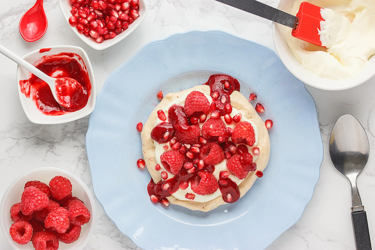

The sight of the season's first raspberries
at the market - reminds of a thing: that the holidays will be upon us before we know it.
One egg white can be transformed into enough meringue - comfortably enough - for two people every single time.
While you can, of course, make these with any fruit you like at any time of year you choose, the colour and timing of making them
with raspberries and pomegranate seeds has become a seasonal habit. Northern hemisphere Christmas food doesn't really fit
well into the height of summer here in antipodean Melbourne: when it's 40 degree Celcius, a plum pudding swathed in custard - as good
as - feels out of place. Instead, fruit and lightness rule, though it can't be resisted by giving more than passing a nod to the tradition
of seasonal red.
There's a lot of get-aheadness about these. The meringues, puree and whipped cream can all be made ahead and stashed away until
required, meaning that getting them together as a dessert is nothing more than a simple assembly job.
Specify caster (superfine) sugar for the meringue out of habit; use golden caster simply because it gives the meringue a slight
tan and adds a touch of caramel. You can use ordinary white sugar instead, however. For sweetening the whipped cream and the
raspberry puree, if required, use icing (powdered) sugar because it eliminates graininess. Again, it's not essential, so use the
sugar you have.
Serves 2.
1 egg white
50g (1/4 cup) caster (superfine) sugar
pinch salt
1/2 teaspoon cornflour (cornstarch)
drop white vinegar
1/4 cup whipping cream
1 tablespoon icing (powdered) sugar
1/2 teaspoon vanilla extract
125g (5 oz) raspberries
3 tablespoons pomegranate seeds
Set your oven to 175 degree Celcius (350 degree Fahrenheit).
Line a baking sheet with baking paper. Trace two circles into it using anything that's round and about 13cm (5 inches) across.
In a scrupulously clean metal bowl - wipe it out with paper towel moistened with a little vinegar if there's any doubt - whisk the
egg white until soft peaks form. Use the balloon whisk attachment on my handheld mixer to do this.
Add the caster sugar, a tablespoon at a time, beating thoroughly between each spoonful.
Sprinkle over the cornflour, add the salt and vinegar and fold through. Do this simply by detaching the whisk from the mixer and
swishing through the meringue by hand.
Divide the mixture between the two circles on your tray, smoothing into (rough) circles with a spoon or spatula. Try to keep them
flat-topped rather than domed, as this will help them to cook more evenly.
Place the tray in the oven and immediately turn the temperature down to 130 degree Celcius (270 degre Fahrenheit). This will make
the outsides crisp while keeping the interiors soft and marshmallowy. Let them cook at this low temperature for 1 hour, then switch
the oven off. Crack the door of the oven open and let the meringues cool on their tray in the oven for 30 minutes.
Meanwhile, take half the raspberries and either puree in the processor or push through a sieve. If they are very seedy, which
raspberries can sometimes be, a sieve is best. Taste the puree and, if it is too tart, stir in a little icing (powdered) sugar to
taste.
Whip the cream, icing (powdered) sugar and vanilla together until soft peaks form. Cover and refrigerate until required.
To assemble, divide the cream between the meringue bases, dot with the remaining raspberries, drizzle with the raspberry puree and
sprinkle with the pomegranate seeds.
This recepie is taken from aforkandapencil.com